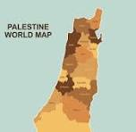
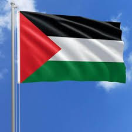

The State of Palestine has a long and rich history, rooted in ancient civilizations that thrived in the region. It is considered a land of great cultural and religious importance.
Throughout history, Palestine has witnessed many empires and powers including the Romans, Byzantines, Islamic Caliphates, and the Ottomans. Each left a deep mark on its culture.
In the 20th century, the Palestinian people faced major political challenges, including the occupation and displacement, but their struggle for independence and recognition continues to this day.